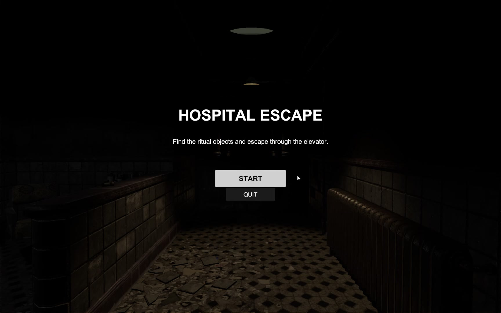
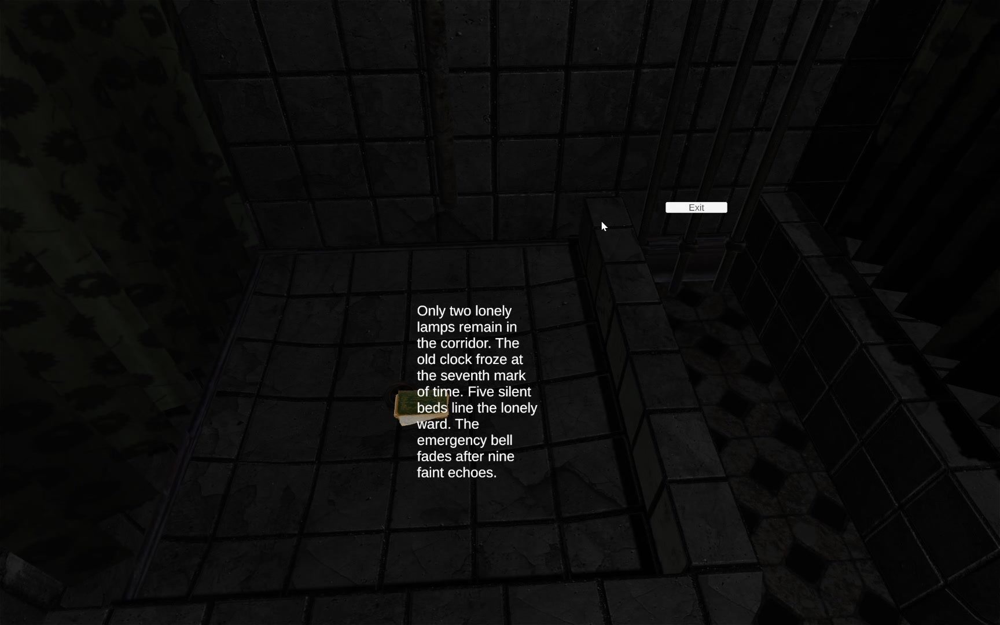
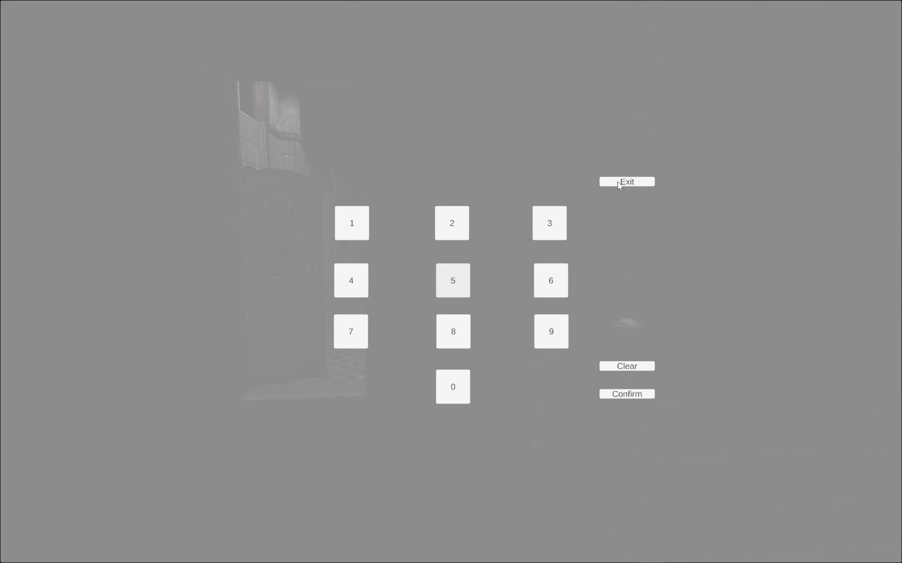
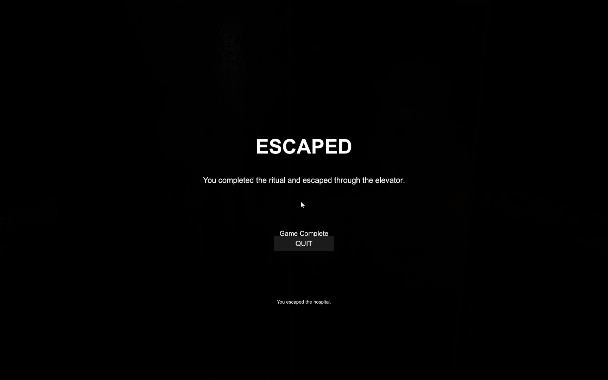
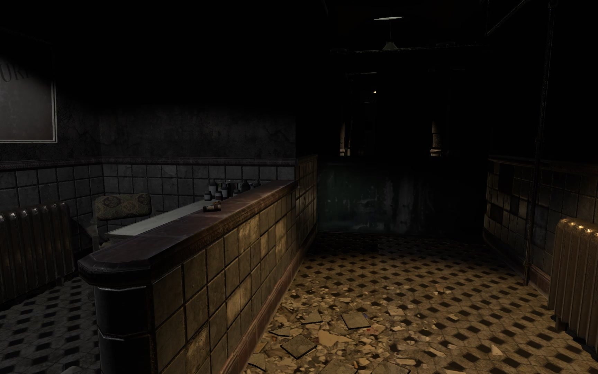
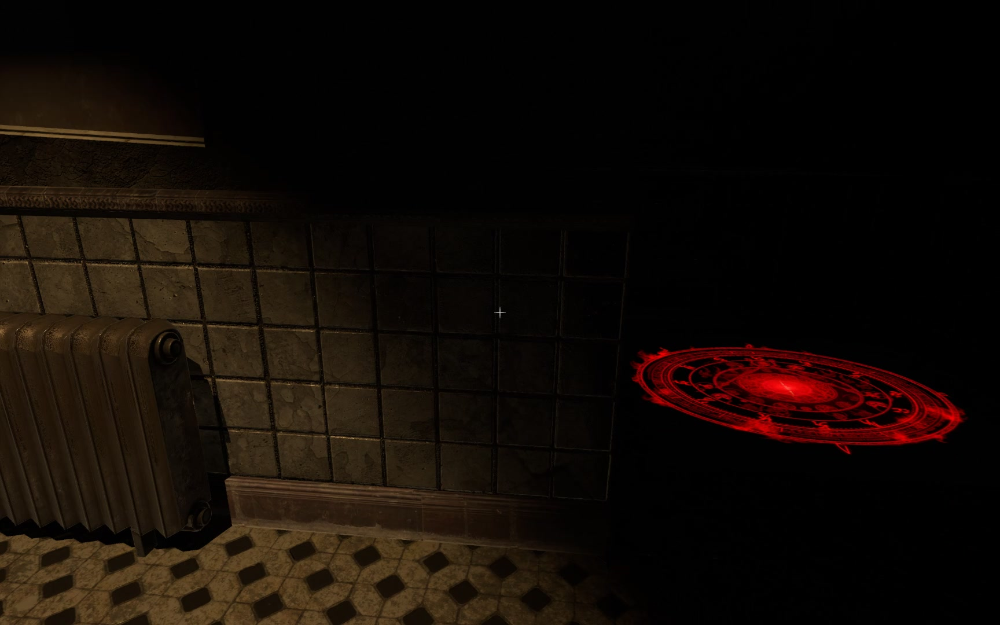

Final game design report
Design, three-level progression, implementation and playtesting (8 pages).
Game development · Unity 3D · Team of five · 2026
A first-person escape room in an abandoned hospital: find keys, crack a code, complete a ritual and escape by elevator.
A first-person horror escape room set in an abandoned hospital. Every door is a gate: you need the right item and the right knowledge to pass.
Tutorial level: find a hidden key and open the first door. Teaches movement, collecting and interacting.
Read a notebook clue, work out the four-digit code and enter it on the keypad to unlock the next area.
Collect three ritual items around the hospital, complete the ritual at the red circle, then take the unlocked elevator out.
With Changbo Wang I implemented the game’s UI system. These are its main screens:




Testers picked up the controls quickly. Two usability notes came out of it: the link between a clue and its theme could be clearer, and some small objects were hard to spot.
| Issue found | Fix |
|---|---|
| Clicking a UI panel also clicked objects behind it | Check for UI under the cursor before casting rays into the 3D world |
| Password input failed on inconsistent data types | One shared validation routine for keypad input |
| Repeated interactions gave unclear feedback | Timed, state-based on-screen hints |


Team assets: the hospital environment uses assets from the Unity Asset Store, assembled into levels by my teammates Jinghao Zhang and Kejie Ren. My contribution is the UI system shown above, together with Changbo Wang.
Design, three-level progression, implementation and playtesting (8 pages).
Team: Haiqi Shen (gameplay scripts), Jinghao Zhang and Kejie Ren (levels, 3D scenes, art integration), Mengxuan Shen and Changbo Wang (UI, playtesting, report). Environment assets from the Unity Asset Store; GPT-4o and GitHub Copilot assisted with scripting, as declared in the report. The Windows build (≈300 MB) is available on request.